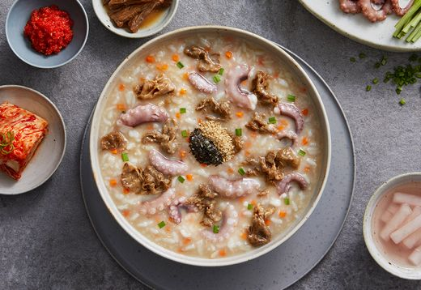

- 본죽 신메뉴 소개
- 내가 뽑은 최애 메뉴 소개
- 최근(2020)마케팅 전략
응원의 마음 담은 고단백의 수험생 위한 대표 메뉴, ‘불낙(不落)죽’
수학능력시험이 100일 앞으로 다가오며 본격적인 컨디션 관리에 돌입하는 때가 다가왔다. 특히 올해는 신종 코로나바이러스 감염증(코로나19)로 인해 사회 전체가 혼란을 겪으며, 다른 이들에 비해 정신적, 신체적으로 지쳐 있는 수험생들의 컨디션 관리가 최우선 과제로 떠오르고 있다.
최상의 컨디션 관리를 위해서는 건강 관리의 기본인 음식 섭취부터 신경 쓰는 것이 좋다. 자극적인 음식보다는 소화가 잘되면서도 속을 편하게 해주는 보양죽이나, 뇌를 활성화 해주는 브레인푸드, 건강기능식품 등의 활력 푸드를 챙기는 것이 도움이 될 수 있다.

시험을 앞두고 예민하고 스트레스를 많이 받는 수험생들은 속쓰림이나 복통 등 다양한 소화 장애증상이 쉽게 나타날 수 있다. 이로 인해, 공부하는 데 있어 방해를 받거나 컨디션 조절을 망치지 않으려면 자극이 덜하면서도 소화가 잘되는 죽과 같은 음식을 섭취하는 것이 좋다. 한식 프랜차이즈 기업 본아이에프에서 운영하는 죽 전문점 ‘본죽’에 선보이고 있는 ‘불낙죽’은 고단백 영양죽으로 출시 이후 매년 꾸준히 수험생을 위한 대표 메뉴로 손꼽히고 있다.
영양이 풍부한 불고기와 신선하고 탱글탱글한 식감을 자랑하는 보양식품 대명사인 낙지를 듬뿍 담아 체력 보충에 으뜸이다. 특히 제품명에 ‘아니 불(不)’, ‘떨어질 낙(落)’자가 사용해 중요한 시험의 합격 기원 의미도 더하고 있어 수능을 비롯한 중요한 시험을 앞둔 수험생들이 섭취하기 좋다.